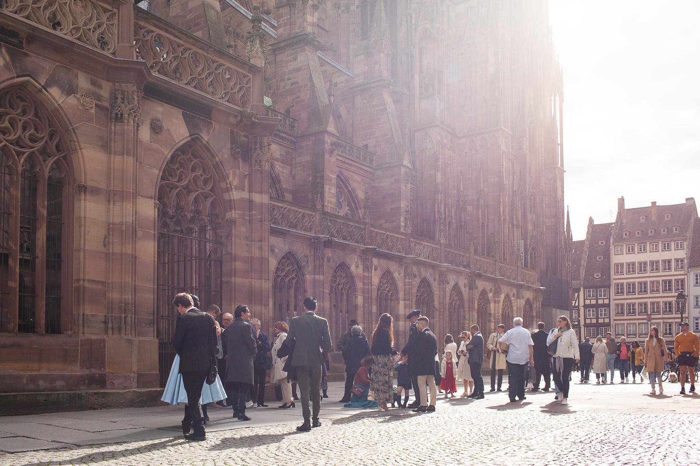

Un mariage à la Cathédrale Notre-Dame de Strasbourg
La Cathédrale Notre-Dame de Strasbourg, trésor historique de la capitale alsacienne, est un monument bien connu de tous les visiteurs de cette ville. C'est aussi un lieu de culte bien vivant, enraciné dans la vie paroissiale de ses habitants. La Cathédrale offre un décor splendide, majestueux et solennel, pour célebrer un sacrement aussi beau et important que celui du mariage.